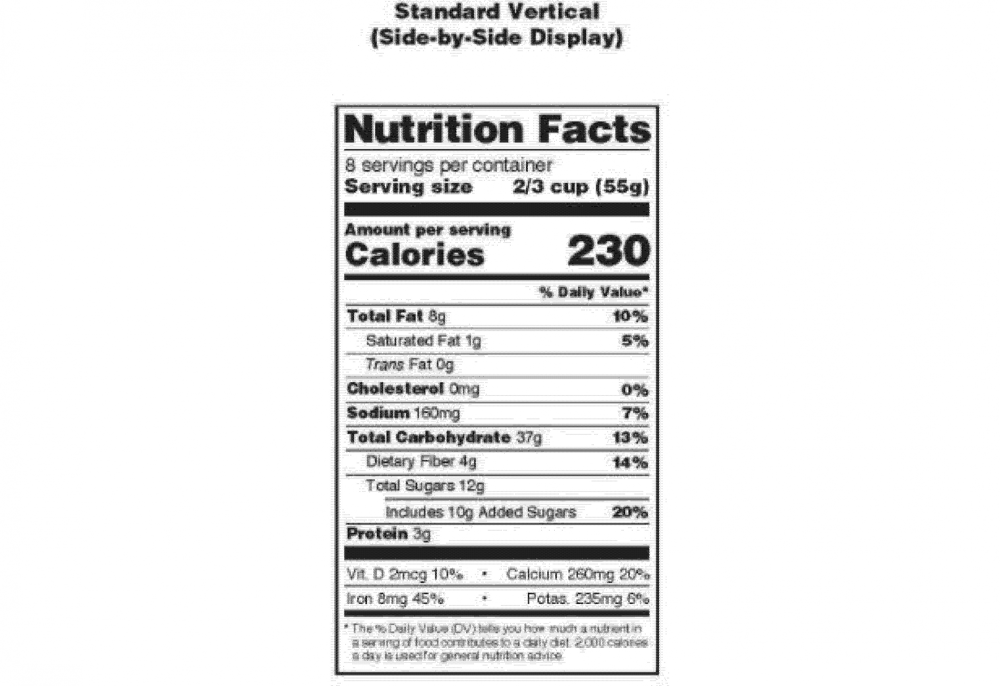
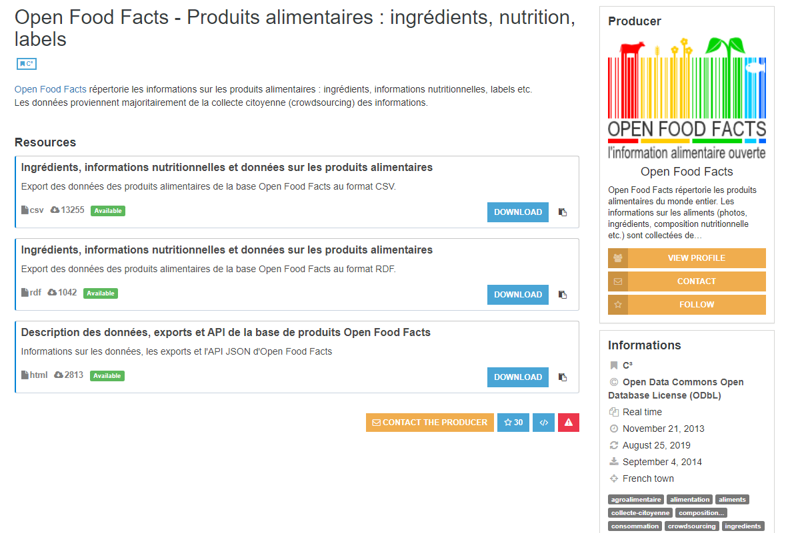
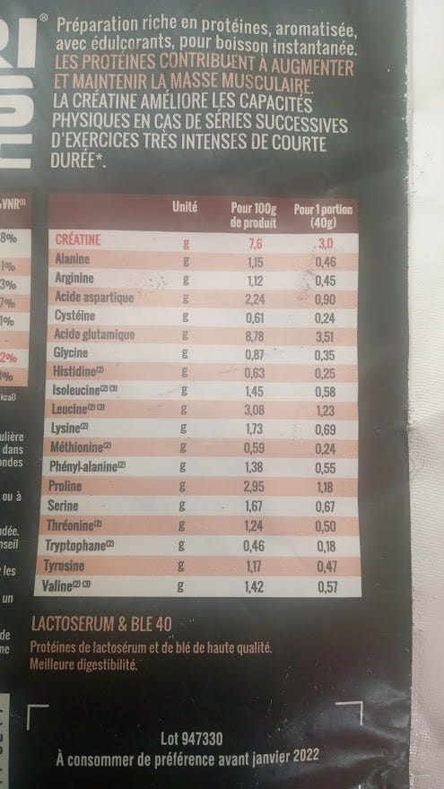

From ingredients to profitable investments



Here is a database of consumer product ingredients. All the ingredients used to make a given consumer product. it is an elementary fact to know that the price of a product is a function of the prices of the ingredients used and we know that there are companies and industries behind each ingredient used in a consumer product. So if you know the level of sale of each consumer product and you have this database of consumer product ingredient, you can jump all the way up and know the revenues of each company involved in the manufacturing and sales of the ingredients and by the way, if you are an independent trader or an institutional fund, you can not say that such information is irrelevant to you. With this kind of data on hand, you as an investor, have a very insightful element that could help you have an information advantage and make better investment driven by sales of consumer products.

Here is an example of a product. it is not a product I use and neither I recommend you but with the volume of sale of this product on hand we know a chunk of revenues that go to the companies that produce Alanine, Arginine …..
it happens that outsourcing this kind of data is now easy to do and you as an investor should have such kind of data outsourcing system because investment is often a race of information.
Collecting, aggregating, and monitoring data are three pieces of activity that could make an investment firm successful and I hope yours is exploiting big data and data science to have a smart system that could provide you decisive information that the market does not have and that highlight clearly a profitable trade to be done.
Used my skills and systems of collecting, aggregating, and monitoring data to come up with a data-driven book about the short bubble that Gamestop Experienced.
My financial engineering experience and my understanding of market microstructure helped me a lot like my software engineering and data science skills. Of course, my interest in financial markets increased a lot my curiosity to know more about any kind of ideas and fields because an investor should have a broad reach of knowledge.
PS: You can get Early-Reader access to my coming book, Gamestop, anatomy of a stock short bubble by filling this form